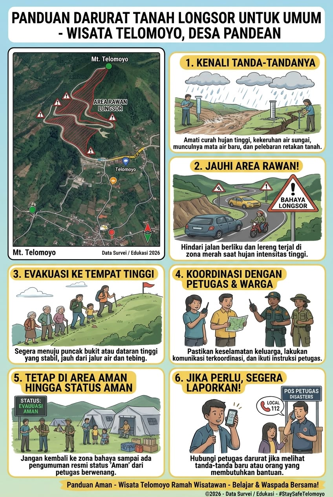
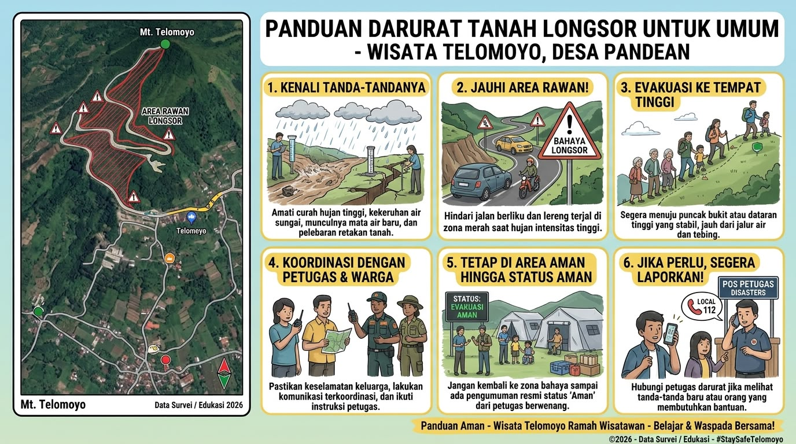
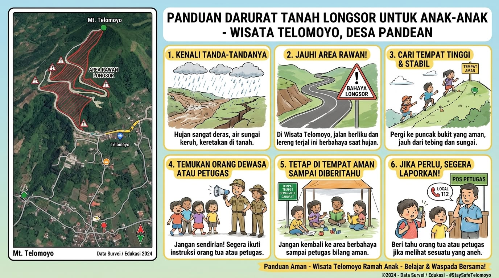
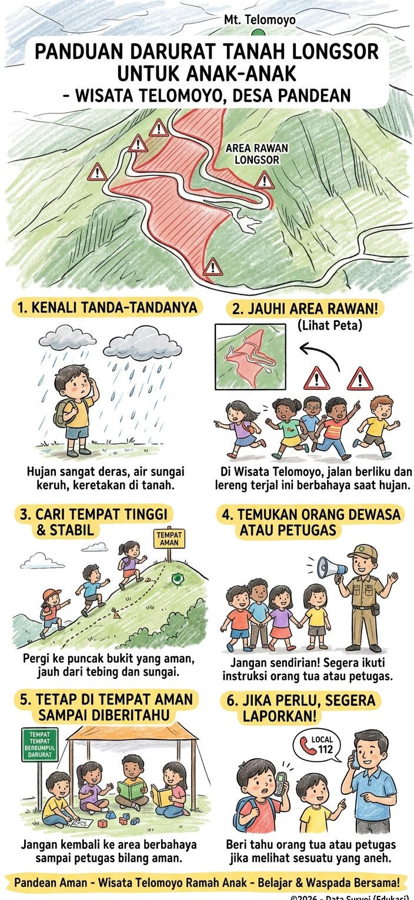

Panduan Visual Bencana
*Ketuk pilihan di bawah untuk menyesuaikan panduan visual
-
1Panduan Visual Lanskap: Peta area rawan longsor Telomoyo beserta langkah dasar 1 hingga 6.

-
2Panduan Visual Vertikal: Urutan langkah mitigasi terstruktur untuk wisatawan dewasa.

-
1Panduan Edukasi Lanskap: Penyelamatan diri yang mudah dipahami anak-anak di area wisata.

-
2Sketsa Jalur Evakuasi: Gambar peta jalur dan tebing Telomoyo yang ramah anak.

Faktor Pemicu Longsor Telomoyo
*Edukasi penyebab ketidakstabilan lereng di area wisata Desa Pandean
- Curah Hujan Tinggi & Durasi Lama: Air hujan meresap ke dalam tanah dan tertahan oleh lapisan batuan kedap air di bawahnya. Hal ini membuat beban tanah bertambah drastis.
- Kemiringan Lereng yang Curam: Kawasan lereng Gunung Telomoyo memiliki sudut kemiringan tebing yang terjal sehingga gaya gravitasi menarik massa tanah ke bawah lebih kuat.
- Struktur Tanah & Beban Atas: Jenis tanah gembur di atas batuan keras rentan bergerak jika dipicu getaran beban kendaraan atau infrastruktur di bibir tebing.
- Pengikisan oleh Aliran Air (Erosi): Aliran air permukaan yang tidak memiliki saluran drainase teratur akan mengikis kaki tebing, membuat fondasi lereng kritis.
Hubungi Kontak Darurat
*Ketuk tombol untuk melakukan panggilan jika membutuhkan bantuan